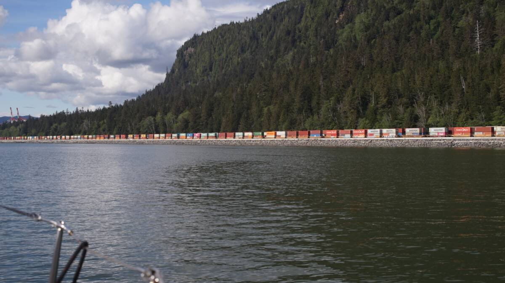

prince rupert

On May 29th 2024, Pino arrived in Prince Rupert. This is a milestone for us, we've been reading about this city for a long time, now it has leapt out of the pages of the books and websites we've consulted. We are in it, and thrilled!

We sailed here from Captain Cove(above photo), an anchorage nestled in the arms of Pitt Island on the northern coast of B.C., at the meeting of Ogden and Petrel Channels. Good winds led us here from Petrel Channel, a lot of it from an incessant barrage of squalls at our stern. They were taking turns at us, filling our sails and allowing us to get there faster than we could have ever imagined. Sailing through Petrel Channel was some of the best sailing we've done, ever. Sailing fast on smooth seas is so pleasant, the boat's movements aren't dampened by waves, and the ride is eerily silent.
The same couldn't be said of our sail from Captain Cove to Prince Rupert... the wind was down, and the current that we assumed would help propel us to our destination was not cooperating, and we couldnt not understand why. We knew that the stream split in half near its northern end, one going north, the other SE, but we were well positioned to ride the northern stream into Arthur Channel. We had coordinated our departure with a rising tide, and we had read in Sailing Directions that in this area the flood went north.
"Ogden Channel: The north-going flood stream sets into Ogden Channel and near its north end it divides, one part turning SE in Grenville Channel, the other continuing north toward Arthur and Telegraph Passages."
Instead of the stream adding to our speed, it ate up 1 precious knot of speed. We couldn't understand it, we continued hugging the north part of the channel. We later learned that this loss in speed may have been due to snowmelt.
"Channel waters contain a significant freshwater component, and the surface water layer of Ogden Channel does not reverse with incoming tides during snowmelt."[Source].
Eventually, some wind came up and helped to restore our loss of speed, then when we turned into Arthur Passage proper, we gained a full knot of speed, and then eventually 1.5 knots. We were speeding at 5.6-6 knots!
We didn't have VHF reception in Captain Cove, so we had no idea what it was like out there. The forecast a few days ago called for 10-20 SW winds, but the weather doesn't need much time to change its mind, it could easily decide to blow harder, but instead, it decided to do the opposite. Once out of Arthur Passage, the waters were smooth, smooth, only disturbed by the passing of a few squalls. We got cell and VHF reception here, we were able to confirm that the wind at Holland Rock was 5-15 knots, nearer to the 5 than to the 15, it seems. With our cell signal restored, we contacted the Prince Rupert Yacht Club to ask if they had any slips available. They weren't there to answer, so I left them an email with our phone number.
Surely enough, Kevin, the harbormaster, gave me a ring, to say that they had room on the dock for us. "What's your speed?" He asked, "4.5 knots." He could track us on AIS, "4.3 here, it says." I laughed, "yea well, been a while since I've checked!" "You'll get an extra knot of speed soon, the flood is ramping up!" Aw, what a nice guy. He insisted that even if we arrived at 1830, which our speed seemed to indicate, that he would be there to show us where to dock, and to catch our lines. "Even at 1830?" I inquired. "Oh yes! We stay around till late, we'll be there!" This was reassuring, we were eager to have a dock to tie to so we could do laundry, and maybe take a shower. If the marina(Cow Bay Marina) and the yacht club were fully booked, we knew we could anchor in Pillsbury Cove or Russell Arm, but if we could have a dock, we'd choose that.

It's a long, long way into the port of Prince Rupert, the channel is very long, and bordered by industry. On our way in, we saw a long line of containers, as far as we could see. The containers were mounted on trains, either to be ferried out, or in, we couldn't tell. The first thing you see when entering is a large container terminal, an impressive sight. They were loading a ship when we passed by.

Surely enough, Kevin was around! We saw him on the dock with two young guys, both carrying big drop-style fenders. He pointed to our spot and Devine used the running current to swerve us right into it. The drop fenders were laid between us and the dock, and they caught our lines. Crazy, we thought, we never expect anyone to do this for us, least of all to be here to welcome us at 1830, and to have monitored our arrival on AIS all the while. When docked, he insisted on telling us about the restaurants we ought to try, gave us information about where to find everything, whether its a grocery, showers, laundry, whatever. "We've got the smallest Walmart in the world! You gatta try the beer fries at Breakers Pub! And the coffee here is good and strong." Like in Port McNeill, the people here just love what they do, they're good-natured, happy to help and proud of their city.
Prince Rupert is a very lovely city. After arriving we went out to try and find a plantbased burger and fries, and explored the city on the way. Like all cities by the water, they have old ship props on display, bollards painted like cows (because of the street's proximity to Cow Bay Marina), a store with Memphis-style writing, pubs on stilts... we'd only been in it for 5 minutes and we already loved the place.
More soon...